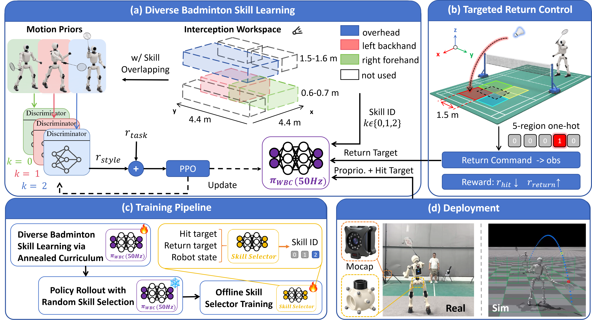

Abstract
Humanoid badminton requires more than accurate interception of an incoming shuttle: the humanoid must execute diverse stroke skills from varying interception areas, reposition over a large workspace, and control where the return lands. To address these challenges, we present Beyond Hitting, a learning framework for diverse skill acquisition, task-conditioned stroke selection, and targeted return control. Three adversarial motion priors provide soft guidance for overhead, underhand forehand, and underhand backhand strokes, allowing a learned skill selector to choose the most useful stroke from the incoming shuttle state, desired return target, and robot state, replacing rigid hand-crafted skill boundaries. Return placement is incorporated directly into policy training through an annealed curriculum, with the desired landing region provided as an explicit command. The resulting framework learns diverse whole-body badminton skills over an interception workspace of up to 4.4 m by 4.4 m, while the commanded return target jointly guides stroke selection and whole-body return execution. On a real 24-DoF humanoid, the system demonstrates sustained human–robot badminton rallies exceeding 40 hits across several human partners, together with diverse strokes, agile footwork, and coordinated whole-body motion.
System Overview

(a) Diverse badminton skill learning. Three motion-prior datasets provide style guidance for overhead, underhand-forehand, and underhand-backhand strokes through independent AMP discriminators, while PPO trains a unified whole-body controller over overlapping interception regions.
(b) Targeted return control. A desired landing region is provided as a return command, while the hitting reward is annealed in this training stage and the return reward is strengthened to learn controllable shuttle placement.
(c) Training pipeline. The whole-body policy is first trained with an annealed curriculum and position-conditioned skill usage; rollout data are then used to train the task-conditioned skill selector, which predicts the most suitable skill for each incoming shuttle.
(d) Deployment. The trained system is deployed on the real humanoid using motion-capture sensing and evaluated in both real-world and simulation badminton scenarios.
Results
Simulation rallies
Robot-robot rally using the same policy.
Fixed return target without skill selector.
Alternate return target with skill selector.
Alternate return target without skill selector.
Real-world rallies
Human–robot rally targeted to the center region.
Rally with Player 1.
Rally with Player 2.
Rally with Player 3.
BibTeX
@article{beyondhitting2026,
title = {Beyond Hitting: Learning Diverse Humanoid Badminton Skills with Targeted Return Control},
author = {Anonymous Authors},
journal = {Preprint},
year = {2026}
}